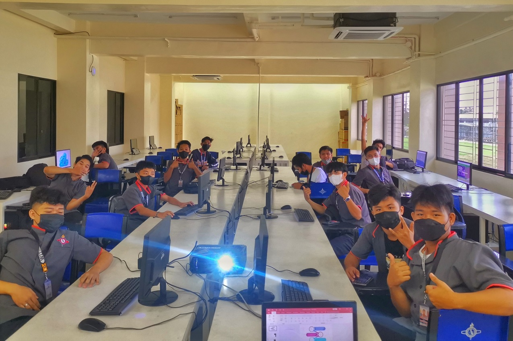

IT Instructor & Professional
Joana M.
Bernardino
Educator in Computer Science & Information Technology · Western Institute of Technology


F2F Class
Online Class
About
I graduated in 2013 from Western Institute of Technology and worked as an IT laboratory custodian and technician for a year after graduation. Encouraged by my professors and department head to share my knowledge, I stepped into teaching — a path I never originally envisioned for myself.
Today I teach senior high school and college students, particularly those pursuing a Bachelor of Science in Information Technology. In 2024, I completed my Master of Science in Information Technology at Saint Louis University, Tuguegarao — a milestone that deepens my ability to lead and innovate in the classroom.
Areas of Expertise
Computer Hardware & Servicing
Multimedia & Adobe Applications
Computer Networking
Java Programming Language
Database Management
System Architecture in AWS
Education
2024
Master of Science in Information Technology
Saint Louis University · Tuguegarao City
2013
Bachelor of Science in Information Technology
Western Institute of Technology